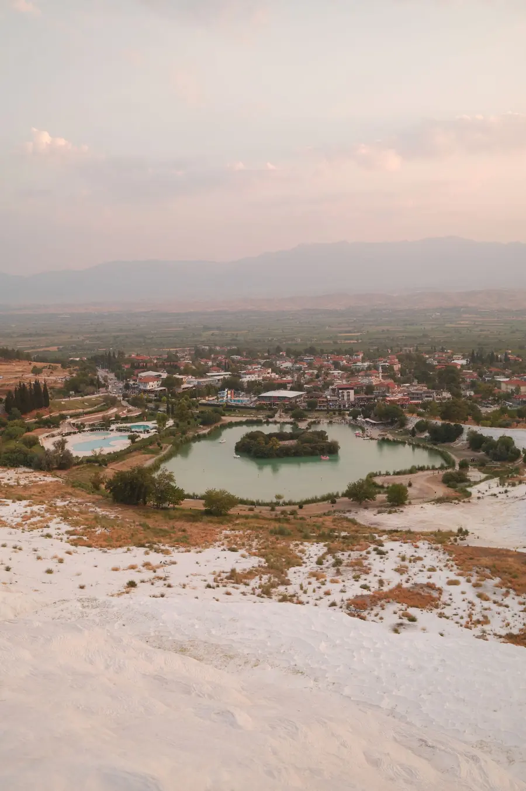
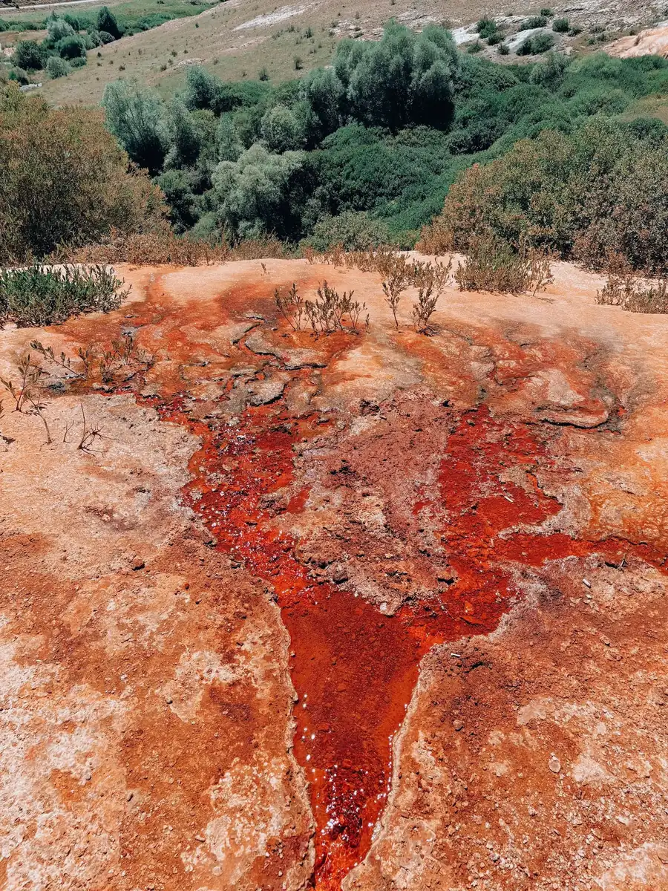
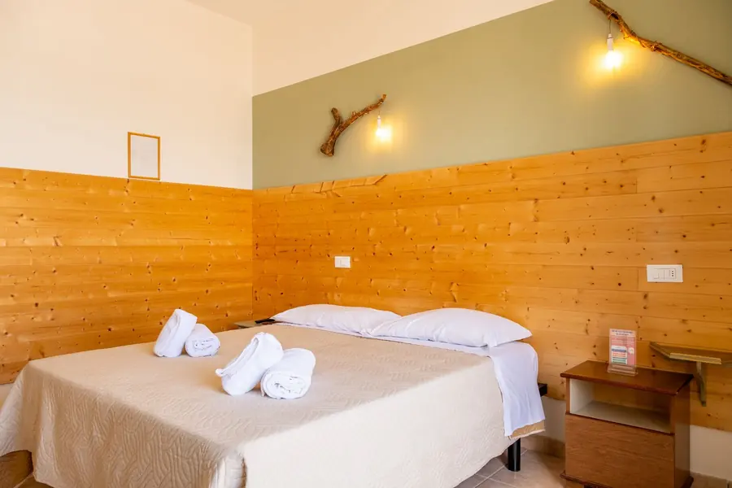

Sofra kurulur
Konuk notlarında kahvaltı ve işletme sahibinin ilgisi sık anılır. Güne çayla başlanır; menüyü yayında otelin kendi sofrasıyla yazarız.
Kahvaltısı övülen, işletme sahibinin ilgisiyle anılan küçük bir termal konak. Tarihinizi seçin, talebiniz hazır yazılsın.
Belediye Cd. No:19, Karahayıt, Pamukkale / Denizli


Yurt dışından gelen misafir için tek bir yazışma yeter: seçtiğiniz dilde hazır mesaj otele gider, yanıtı otelden alırsınız.
Sayfa ve mesaj Türkçe, İngilizce ya da Almanca hazırlanır.
Giriş, çıkış ve misafir sayısını seçin; gece sayısı kendiliğinden hesaplanır.
Mesajı WhatsApp'ta açın ya da kopyalayın. Fiyat ve koşulları otel söyler.



Konuk notlarında kahvaltı ve işletme sahibinin ilgisi sık anılır. Güne çayla başlanır; menüyü yayında otelin kendi sofrasıyla yazarız.
Pamukkale'nin travertenleri aynı bölgede. Gitmeden önce ziyaret koşullarını ve saatlerini teyit edin.
Karahayıt'ın demir oksitli suyu yer yer kırmızı-turuncu bırakır. Işık alçaldıkça renk derinleşir.
Gün biterken sade, sıcak bir oda. Gerçek oda tipleri yayında sizden alınır; buradaki görsel örnektir.
Saat vermiyoruz: akış gün içi bir fikirdir. Fotoğraflar temsilîdir.
Bu bir rezervasyon onayı değil, talep fişidir. Müsaitlik ve fiyat bu önizlemede yok; otel size dönüş yapar.
Temsilî fotoğraflar; yayında otelin kendi kareleri yer alır. Büyütmek için dokunun, yana kaydırın.
Konakladınız mı? Google'daki yorumunuz sonraki misafire yol gösterir.
Örnek yer. Uydurma puan ya da yorum göstermeyiz; yayında doğrudan yorum yazma bağlantınız konur. Şimdilik Google Haritalar kaydına gider.Temsilî fotoğraf